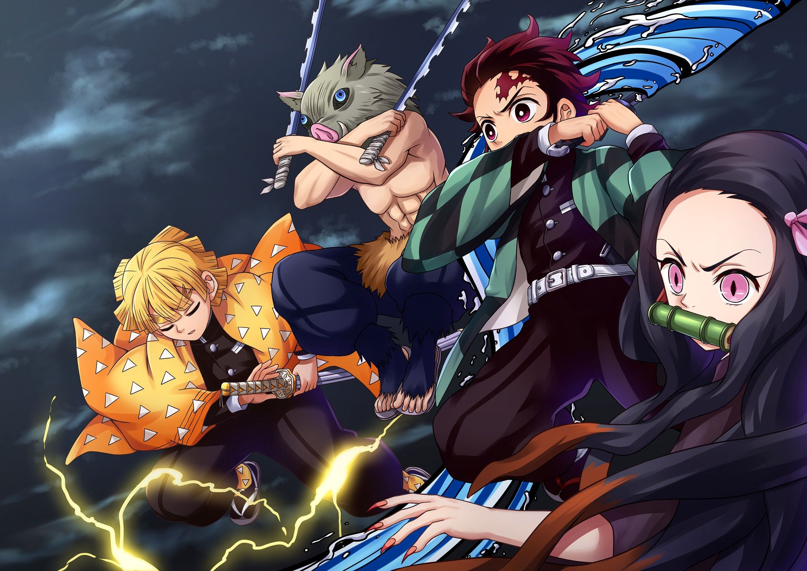

Demon Slayer is an anime and manga series that tells the story of Tanjiro Kamado, a boy whose family is attacked by demons. After the attack, his sister Nezuko becomes a demon, and Tanjiro begins a dangerous journey to find a cure and protect others.
One thing that makes Demon Slayer special is its balance of action, sadness, humor, and hope. Each character has a unique personality and fighting style that makes the story more exciting.
The anime is also known for its beautiful visuals and memorable battles, which help make it one of the most popular modern anime series.

You can read more about anime and manga storytelling at Britannica's anime overview.
| Character | Breathing Style | Description |
|---|---|---|
| Tanjiro Kamado | Water Breathing | A versatile style that mimics the flow of water, allowing for fluid and powerful attacks. |
| Zenitsu Agatsuma | Thunder Breathing | A fast and aggressive style that focuses on lightning-fast strikes. |
| Inosuke Hashibira | Beast Breathing | A wild and unpredictable style that mimics the movements of animals. |
| Kyojuro Rengoku | Flame Breathing | A powerful style that uses fiery attacks to overwhelm opponents. |
Return to the Home Page.